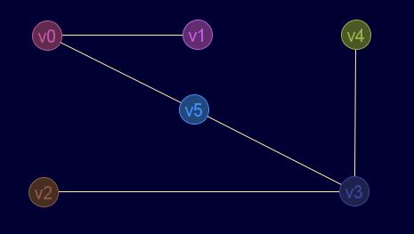

Descripción
Comprueba si un nodo o un conjunto de nodos de un grafo no dirigido son de corte
Cadena de entrada
gr_corte
Cadena de salida
GRAFO.corte
Uso
gr_corte(<grafo>,<nodo|conjunto>)
Ejemplos
Grafo en JMEScriptGUI con visor de grafos v0.1:

'v3'?:
gr_corte(gr_nuevo([[0,1,1,0,0,3],[1,0,0,0,0,0],[1,0,0,2,0,0],[0,0,2,0,1,1],[0,0,0,1,1,0],[3,0,0,1,0,0]],falso,falso,verdadero,verdadero),'v3')
Booleano: verdadero
¿punto de corte'v0'?:
gr_corte(gr_nuevo([[0,1,1,0,0,3],[1,0,0,0,0,0],[1,0,0,2,0,0],[0,0,2,0,1,1],[0,0,0,1,1,0],[3,0,0,1,0,0]],falso,falso,verdadero,verdadero),'v0')
Booleano: verdadero
¿punto de corte'v2'?:
gr_corte(gr_nuevo([[0,1,1,0,0,3],[1,0,0,0,0,0],[1,0,0,2,0,0],[0,0,2,0,1,1],[0,0,0,1,1,0],[3,0,0,1,0,0]],falso,falso,verdadero,verdadero),2)
Booleano: falso
¿punto de corte'v5'?:
gr_corte(gr_nuevo([[0,1,1,0,0,3],[1,0,0,0,0,0],[1,0,0,2,0,0],[0,0,2,0,1,1],[0,0,0,1,1,0],[3,0,0,1,0,0]],falso,falso,verdadero,verdadero),5)
Booleano: falso
¿conjunto de corte{'v2','v5'}?:
gr_corte(gr_nuevo([[0,1,1,0,0,3],[1,0,0,0,0,0],[1,0,0,2,0,0],[0,0,2,0,1,1],[0,0,0,1,1,0],[3,0,0,1,0,0]],falso,falso,verdadero,verdadero),['v2',5])
Booleano: verdadero
Véase también…
Desde / Última modificación
v0.6.2.0